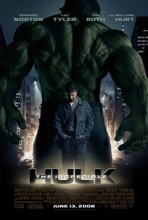
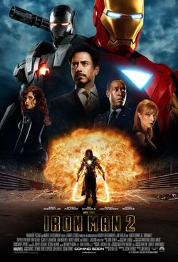
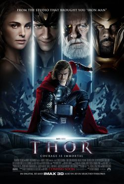

마블 시네마틱 유니버스
페이즈 2


마블 시네마틱 유니버스 (MCU)의 페이즈 2 (Marvel Cinematic Universe: Phase Two)는 미국의 마블 스튜디오에서 마블 코믹스 작품들을 원작으로 삼아 제작한 슈퍼히어로 영화 시리즈이다. 2013년 영화 《아이언맨 3》으로 시작해서 2015년 영화 《앤트맨》까지 총 6편의 작품으로 구성되어 있다. 이 중에는 각 영화를 크로스오버하는 '어벤져스' 시리즈의 두번째 작품, 《어벤져스: 에이지 오브 울트론》 (2015)도 포함되어 있다. 페이즈 2의 프로듀서는 모두 케빈 파이기가 맡았다. 여섯 편의 전세계 박스오피스 흥행기록을 모두 합치면 52억 달러가 넘으며, 평론계와 일반 관객으로부터 대체로 긍정적인 평가를 받았다.
페이즈 2에서 가장 많이 출연한 배우는 크리스 에번스 (캡틴 아메리카 역)으로, 카메오 출연까지 합치면 총 4편에 걸쳐 등장했다. 마블 스튜디오는 본 영화 외에도 MCU 세계관 확대를 위해 마블 원 샷 프로젝트를 기획하여 두 편의 단편영화를 제작하였고, 각각의 영화로부터 스토리가 연계되는 코믹북 시리즈도 출판하였다. <아이언맨 3>, <토르: 다크 월드>, <캡틴 아메리카: 윈터 솔져>의 경우 비디오 게임으로도 나왔으며 마블 시리즈 영화의 스토리를 각색한 게임인 〈레고 마블 어벤저스〉도 발매되었다. 페이즈 2는 페이즈 1, 페이즈 3와 함께 '인피니티 사가'를 이룬다.
영화 관람 순서 & 간략 스토리
아이언 맨 3(2013)
-
평점 :
 8.9
8.9
<어벤져스> 뉴욕 사건의 트라우마로 인해 영웅으로서의 삶에 회의를 느끼는 토니 스타크(로버트 다우니 주니어). 그가 혼란을 겪는 사이 최악의 테러리스트 만다린(벤 킹슬리)을 내세운 익스트리미스 집단 AIM이 스타크 저택에 공격을 퍼붓는다. 이 공격으로 그에게 남은 건 망가진 수트 한 벌 뿐. 모든 것을 잃어버린 그는 다시 테러의 위험으로부터 세계와 사랑하는 여인(기네스 팰트로)을 지켜내야 하는 동시에 머릿속을 떠나지 않던 한가지 물음의 해답도 찾아야만 한다.
-

인크레더블 헐크 (2008)
-
평점 :
7.4
실험 중 감마선에 노출된 이후 분노를 통제할 수 없는 상태가 되면 녹색 괴물 ‘헐크’로 변하게 되는 브루스 배너(에드워드 노튼). 필사적으로 치료제 개발에 매달리지만, 그의 능력을 이용하려는 정부 군대의 끈질긴 추격을 받고 쫓기게 된다. 한편 헐크의 거대한 힘의 비밀을 파헤치던 이들은 헐크보다 더 파괴적인 ‘어보미네이션’을 만드는데 성공, 도시 전체를 집어삼키려 한다. 이에 브루스 배너는 정상적인 인생을 되찾으려던 계획을 버리고, 스스로 ‘헐크’로의 변신을 결심하고, 내부의 분노를 통제해야만 하는 자기 자신과의 싸움, 정부 군대, 그리고 사상 최강의 적 어보미네이션과의 마지막 격돌을 준비한다.
-

아이언 맨 2(2010)
-
평점 :
7.2
세계 최강의 무기업체를 이끄는 CEO이자, 타고난 매력으로 셀러브리티 못지않은 화려한 삶을 살아가던 토니 스타크. 기자회견을 통해 자신이 아이언맨이라고 정체를 밝힌 이후, 정부로부터 아이언맨 수트를 국가에 귀속시키라는 압박을 받지만 이를 거부한 채 더욱 화려하고 주목 받는 나날을 보낸다. 스타크 인더스트리의 운영권까지 수석 비서였던 ‘페퍼포츠’에게 일임하고 슈퍼히어로로서의 인기를 만끽하며 지내던 토니 스타크. 하지만 그 시각, 아이언맨의 수트 기술을 ‘스타크’ 가문에 빼앗긴 후 쓸쓸히 돌아가신 아버지의 복수를 다짐해 온 ‘위플래시’는 수트의 원천 기술 개발에 성공, 치명적인 무기를 들고 직접 토니 스타크를 찾아 나선다.
-

토르: 천둥의 신 (2011)
-
평점 :
7.2
파괴를 일삼는 ‘요툰하임’을 제압한 왕 ‘오딘’의 통치로 평화로운 나날을 보내고 있는 신의 세계 ‘아스가르드’. 오딘의 아들인 ‘토르’의 왕위 계승식이 있던 날, 요툰하임의 지배자인 ‘라우페이’는 신들간의 평화 협정을 위반하고 아스가르드를 침입한다. 이 사건으로 인해 왕위에 오르지 못한 토르는 분노와 모욕감에 복수를 계획하고 요툰하임을 공격한다. 하지만 막강한 요툰하임의 군대에 포위된 토르는 위기에 몰리게 되고, 이를 알게 된 오딘은 토르의 오만하고 경솔한 행동에 분노해 그의 신으로서의 능력과 해머 ‘묠니르’를 박탈한 채 인간 세계 ‘미스가르드’로 추방한다.

퍼스트 어벤져 (2011)
-
평점 :
6.8
왜소하고 마른 체격을 지닌 스티브 로저스는 그 누구보다 간절히 군 입대를 원하지만 빈약한 신체 조건으로 인해 번번이 거부당한다. 그러던 어느 날, 그의 포기를 모르는 근성과 정의로움을 눈여겨본 ‘에스카인’ 박사에 의해 마침내 입대를 허가 받은 스티브 로저스. 번번이 훈련에서 뒤처지고 동료들에게 무시당하기 일쑤지만, 그의 근성과 희생정신을 높게 산 박사는 최고의 전사를 양성하는 ‘슈퍼 솔져’ 프로젝트의 최초 실험자로 스티브를 선택하고, 비밀리에 진행된 이 실험을 통해 그는 완벽한 육체와 인간의 한계를 초월한 신체 능력을 얻게 된다. 하지만 실험 성공과 동시에 히드라 조직 일원의 난입으로 현장은 아수라장이 되고, 슈퍼 솔져 프로젝트의 기술을 알고 있는 유일한 사람인 에스카인 박사의 죽음으로 스티브는 최초이자 마지막 슈퍼 솔져로 남게 된다.

어벤져스 (2012)
-
평점 :
8.6
지구의 안보가 위협당하는 위기의 상황에서 슈퍼히어로들을 불러모아 세상을 구하는, 일명 ‘어벤져스’ 작전. 에너지원 ‘큐브’를 이용한 적의 등장으로 인류가 위험에 처하자 국제평화유지기구인 쉴드 (S.H.I.E.L.D)의 국장 닉 퓨리(사무엘 L.잭슨)는 ‘어벤져스’ 작전을 위해 전 세계에 흩어져 있던 슈퍼히어로들을 찾아 나선다. 아이언맨(로버트 다우니 주니어)부터 토르(크리스 헴스워스), 헐크(마크 러팔로), 캡틴 아메리카(크리스 에반스)는 물론, 쉴드의 요원인 블랙 위도우(스칼렛 요한슨), 호크 아이(제레미 레너)까지, 최고의 슈퍼히어로들이 ‘어벤져스’의 멤버로 모이게 되지만, 각기 개성이 강한 이들의 만남은 예상치 못한 방향으로 흘러간다.